A color scheme is a set of information that allows painting a control in a specific visual state. In general, a color scheme defines a collection of colors that are used by the various Substance painters to paint different control areas (such as background fill, border etc) under a specific visual state.
The org.pushingpixels.substance.api.SubstanceColorScheme
contains all the APIs officially supported by Substance color schemes. The APIs can
be roughly divided in three categories:
org.pushingpixels.substance.api.SchemeBaseColorsorg.pushingpixels.substance.api.SchemeDerivedColorsThe Substance core library provides the following twenty one color schemes:
 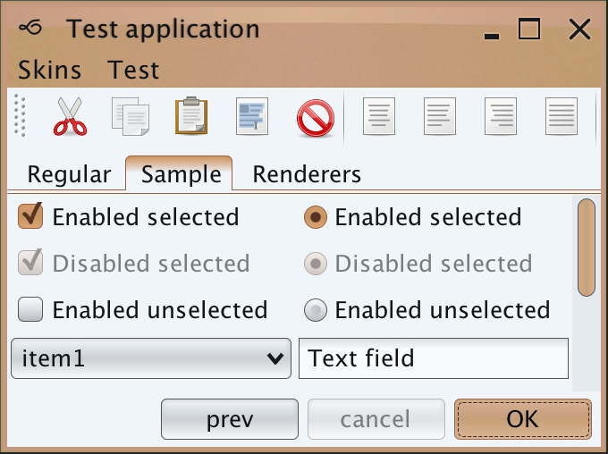
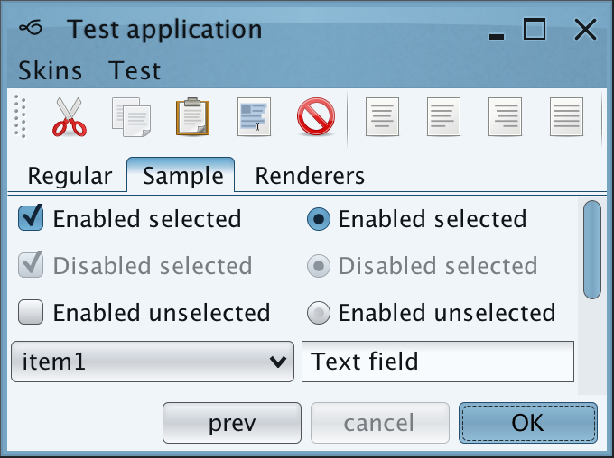
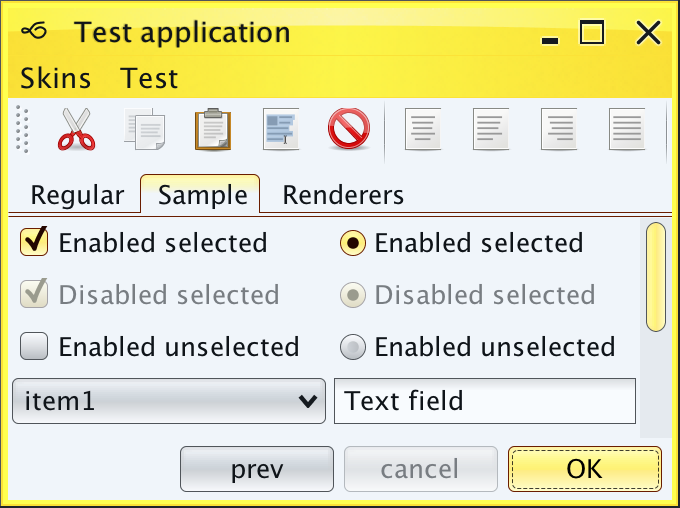
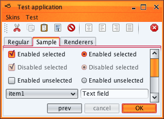
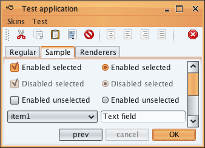
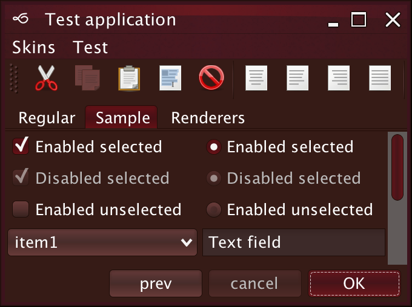
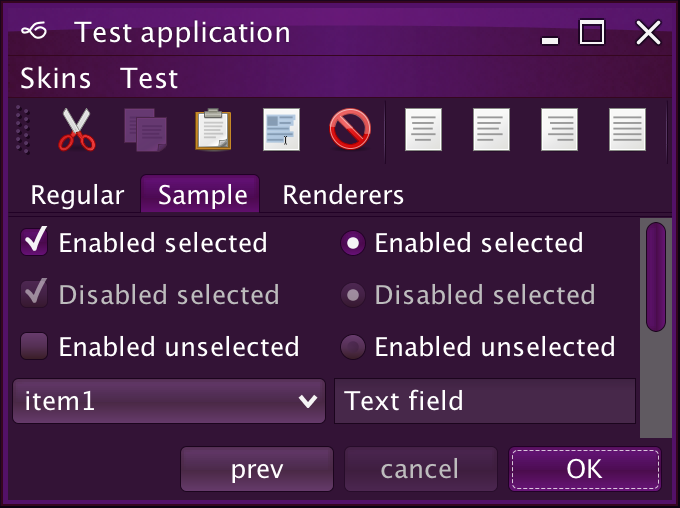
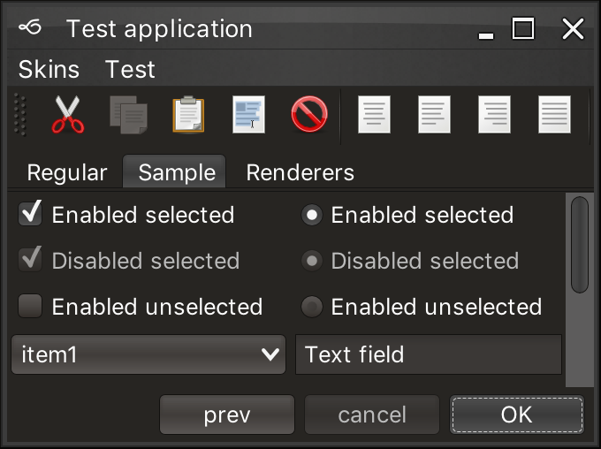
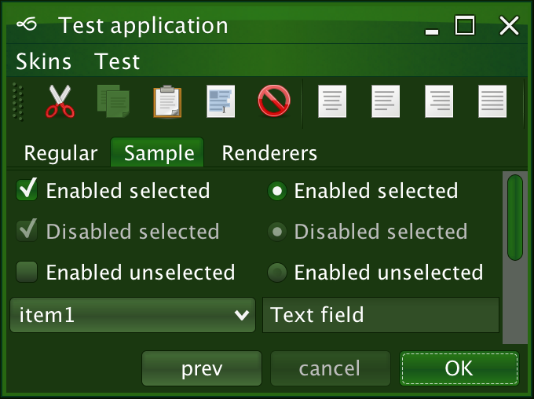
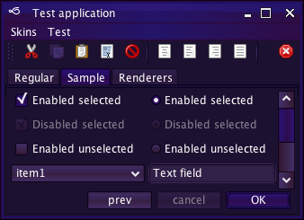
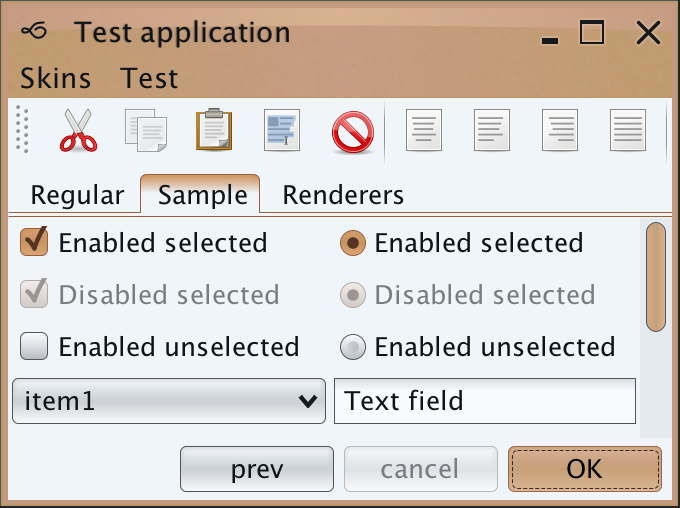
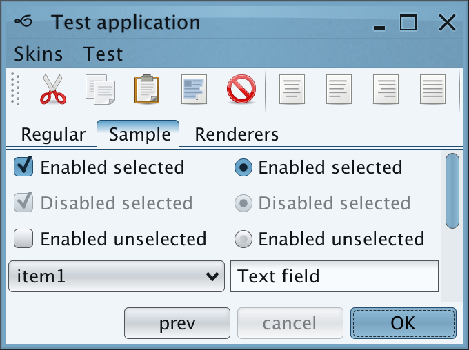
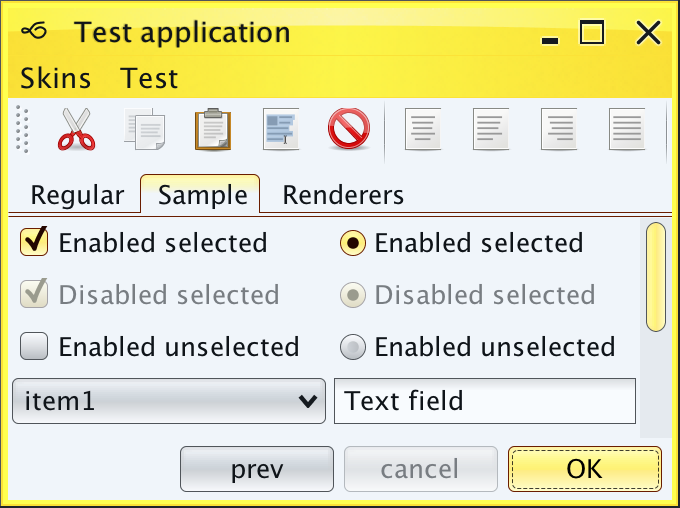
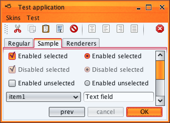
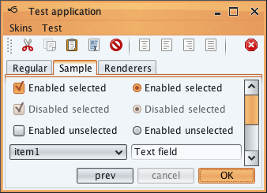
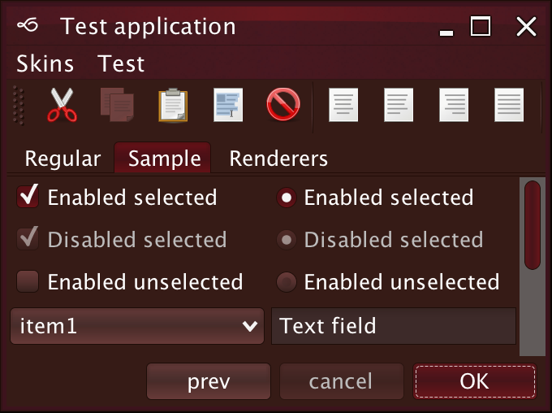
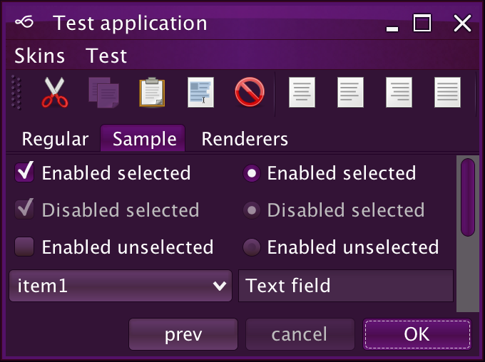
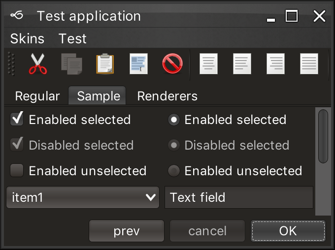
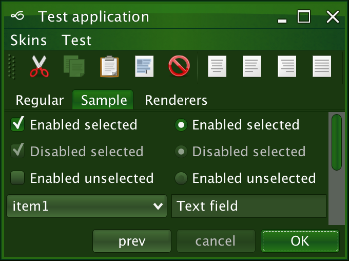
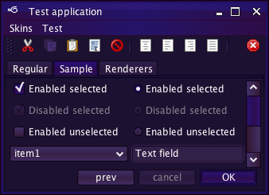
The org.pushingpixels.substance.api.SubstanceColorScheme
contains a number of APIs to create derived color schemes. Note that a color scheme is a delicate
balance between the foreground color and the background colors, providing visually appealing
selection of colors that are designed to work together on various painters. In some cases, creating
a derived color scheme with one the these APIs (especially negated and inverted color schemes)
will not result in visually pleasing appearance.
The following API allows shifting both the background and the foreground colors:
/**
* Creates a shift version of <code>this</code> scheme.
*
* @param backgroundShiftColor
* Shift color for background colors. Should have full opacity.
* @param backgroundShiftFactor
* Value in 0.0...1.0 range. Larger values shift more towards the
* specified color.
* @param foregroundShiftColor
* Shift color for foreground colors. Should have full opacity.
* @param foregroundShiftFactor
* Value in 0.0...1.0 range. Larger values shift more towards the
* specified color.
* @return Shift version of <code>this</code> scheme.
*/
public SubstanceColorScheme shift(Color backgroundShiftColor,
double backgroundShiftFactor, Color foregroundShiftColor,
double foregroundShiftFactor)
Here is the Purple color scheme shifted 80% towards light green in background colors and 70% towards dark red in foreground color (see the foreground color of the selected tab and the default button):
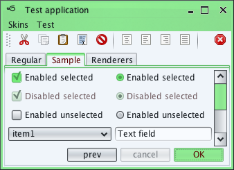The following API allows shifting only the background colors:
/**
* Creates a shift version of <code>this</code> scheme.
*
* @param backgroundShiftColor
* Shift color for background colors. Should have full opacity.
* @param backgroundShiftFactor
* Value in 0.0...1.0 range. Larger values shift more towards the
* specified color.
* @return Shift version of <code>this</code> scheme that does not change
* the foreground color.
*/
public SubstanceColorScheme shiftBackground(Color backgroundShiftColor,
double backgroundShiftFactor)
Here is the Purple color scheme shifted 80% towards light red in background colors:
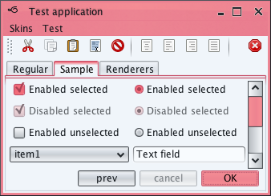The following API allows tinting the colors (shifting towards white):
/**
* Creates a tinted (shifted towards white) version of <code>this</code>
* color scheme.
*
* @param tintFactor
* Value in 0.0...1.0 range. Larger values shift more towards white
* color.
* @return Tinted version of <code>this</code> scheme.
*/
public SubstanceColorScheme tint(double tintFactor)
The following API allows toning the colors (shifting towards gray):
/**
* Creates a toned (shifted towards gray) version of <code>this</code> color
* scheme.
*
* @param toneFactor
* Value in 0.0...1.0 range. Larger values shift more towards gray
* color.
* @return Toned version of <code>this</code> scheme.
*/
public SubstanceColorScheme tone(double toneFactor)
The following API allows shading the colors (shifting towards black):
/**
* Creates a shaded (shifted towards black) version of <code>this</code>
* color scheme.
*
* @param shadeFactor
* Value in 0.0...1.0 range. Larger values shift more towards black
* color.
* @return Shaded version of <code>this</code> scheme.
*/
public SubstanceColorScheme shade(double shadeFactor)
Here is the Purple color scheme tinted 40%, toned by 40% and shaded by 40%:
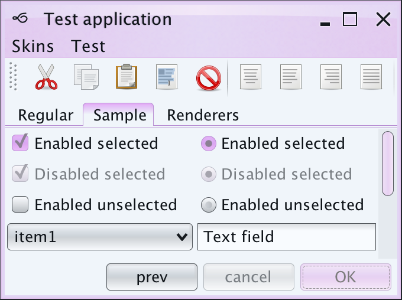 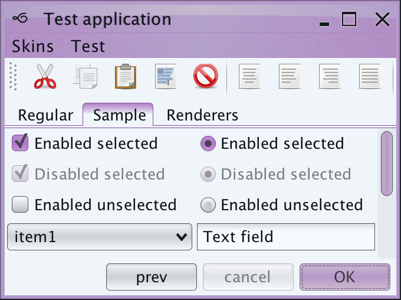 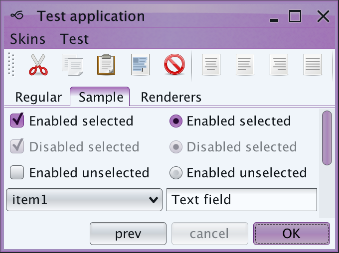The following API allows saturating or desaturating the colors:
/**
* Creates a saturated or desaturated version of <code>this</code> scheme.
* The value and brightness stay the same.
*
* @param saturateFactor
* Value in -1.0...1.0 range. Positive values create more saturated
* colors. Negative values create more desaturated colors.
* @return Saturated version of <code>this</code> scheme.
*/
public SubstanceColorScheme saturate(double saturateFactor)
Here is the Purple color scheme saturated by 40% and desaturated by 40%:
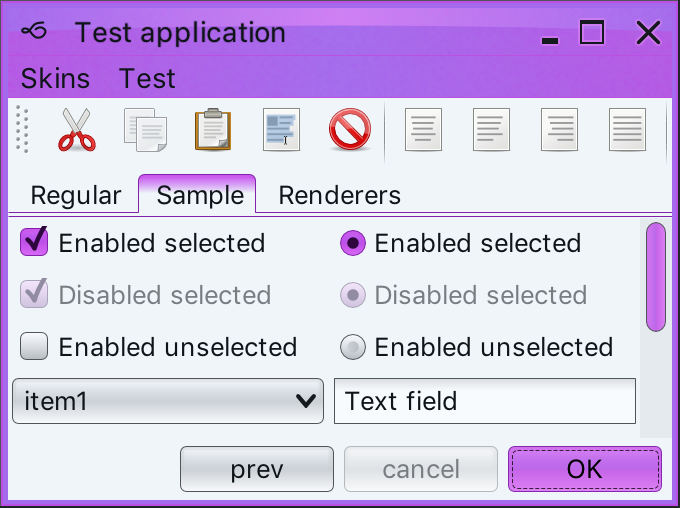 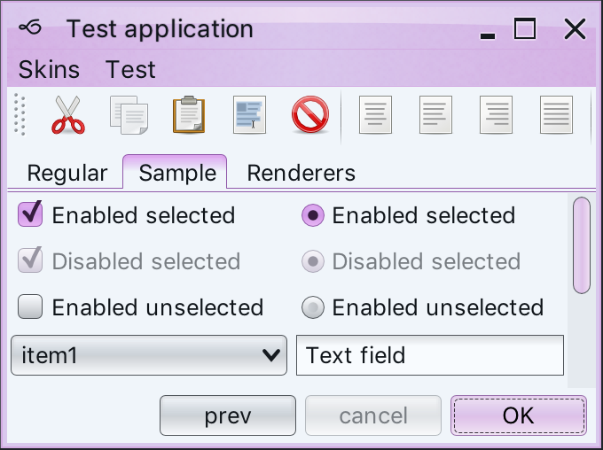The following API allows inverting the colors:
/**
* Creates an inverted version of <code>this</code> scheme.
*
* @return Inverted version of <code>this</code> scheme.
*/
public SubstanceColorScheme invert()
The following API allows negating the colors:
/**
* Creates a negated version of <code>this</code> scheme.
*
* @return Negated version of <code>this</code> scheme.
*/
public SubstanceColorScheme negate()
Here is the Purple color scheme inverted and negated:
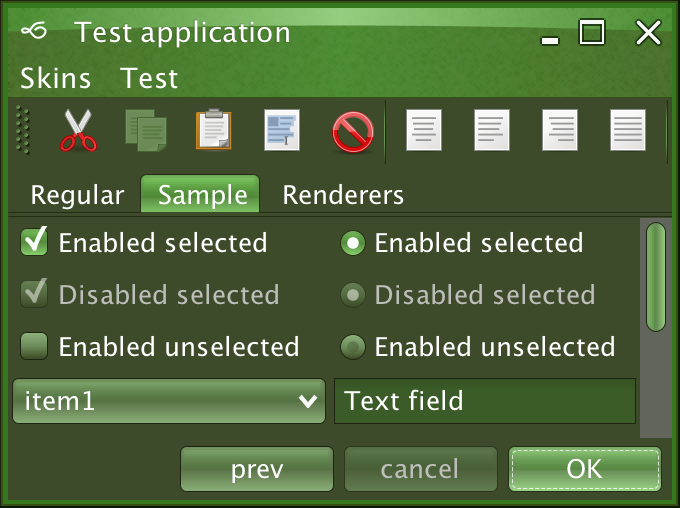 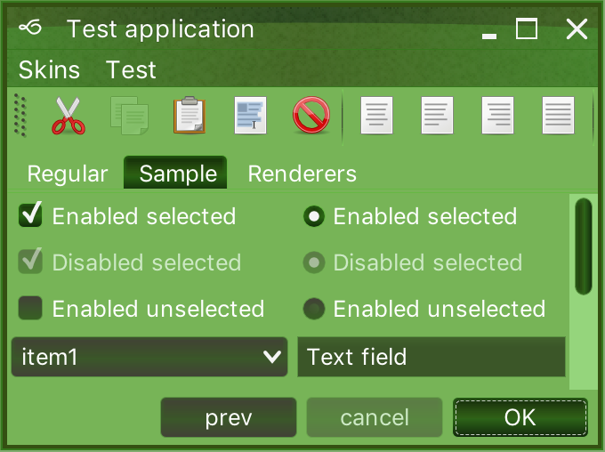The following API allows shifting the hue of the colors:
/**
* Creates a hue-shifted (in HSB space) version of <code>this</code> color
* scheme.
*
* @param hueShiftFactor
* Value in -1.0...1.0 range.
* @return Hue-shifted version of <code>this</code> scheme.
*/
public SubstanceColorScheme hueShift(double hueShiftFactor)
Here is the Purple color scheme hue-shifted by 40%:
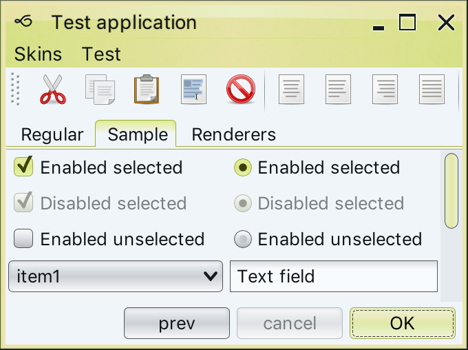